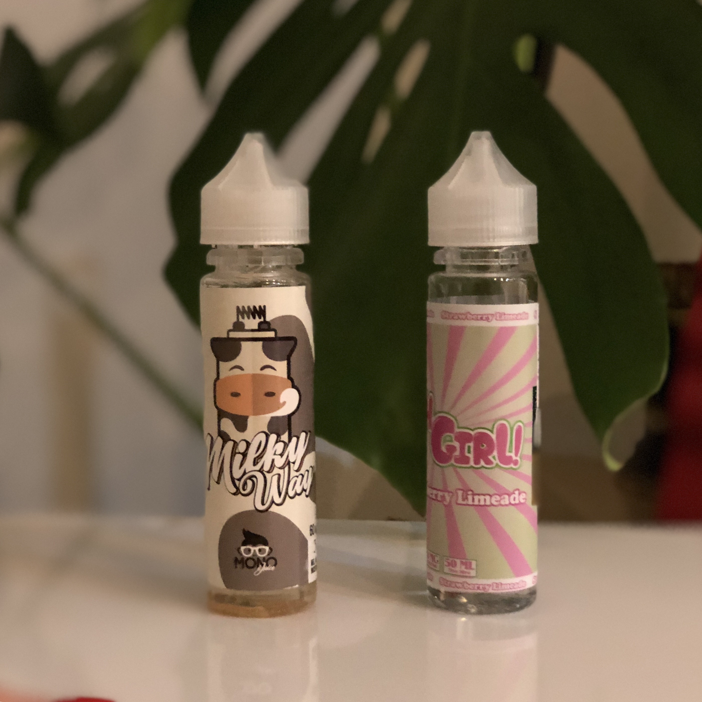

Líquidos de vapeo / E-Liquids / E-Juice
Para que el uso del cigarrillo electrónico se adecúe a las necesidades del consumidor, se necesitan varias componentes totalmente fundamentales (cada uno de ellos en la pagina inicial, con imagenes que nos redigirán a contenido muy interesante y exclusivo). El liquido es uno de ellos, y también es el componente más llamativo e interesante que tiene el cigarrillo electrónico.

Sin depender de cuál sean nuestros sabores favoritos, podemos ir a ver en varias tiendas especializadas de vapeo, para observar que existen una variedad casi infinita de líquidos, de múltiples sabores y matices, y con envases sorprendentes.
Como dato a destacar, hay que saber que la calidad de los líquidos de vapeo dependerá del país dónde lo hayamos comprado. Se tiene que tener claro la procedencias de los e-liquids debido a que, aunque en la mayoría de los países donde hay un gran numero de vapeadores, existe un control de calidad, existen países en los cuales no tienen un control exhaustivo de los mismos y los e-juice pueden ocasionar daño en nuestro organismo. Daño que precisamente los vapedores hemos tomado la decisión de evitar por el simple hecho de dejar de fumar para empezar a vapear.
Composición del líquido de vapeo
El e-juice está compuesto por los siguientes elementos: Propilenglicol (PG), Glicerina Vegetal (VG), Aroma, Nicotina (si el consumidor lo desea), Etanol (dependiendo del fabricante).
Propilenglicol (PG):
El propilenglicol, también denominado 1,2-propanediol o propan-1,2-diol, es un compuesto orgánico (un diol o alcohol doble) con la fórmula C3H8O2 oro LO-CH2-CHOH-CH3. Es un liquido casi inodoro, incoloro, claro, viscoso de sabor dulce, higroscópico y miscible en agua, acetona, y cloroformo. Se suele utilizar en la conservación de alimentos, anticongelante no toxico, solvente en farmacia, emulgente en bebidas, humidificare (en medicinas, cosméticos, alimentación, pasta de dientes i tabaco).
Se dice que a mayor proporción de PG tenga el liquido con respecto al VG, mayor cantidad de vapor exhalará el consumidor. Las proporciones serán escogidas por el fabricante del liquido.
Glicerina Vegetal (VG):
El glicerol es un compuesto orgánico también denominado glicerina. Es un liquido viscoso, incoloro e inodoro que se utiliza ampliamente en fórmulas farmacéuticas. La subestructura de glicerol es un componente central de varios líquidos. Tiene un sabor dulce es de muy baja toxicidad.
Se dice que a mayor proporción de PG tenga el liquido con respecto al VG, mayor sabor se conseguirá y el vapor de la exhalación será más denso. Las proporciones serán escogidas por el fabricante del liquido.
Aroma:
Es el componente del liquido del cigarrillo electrónico que le suministra el sabor necesario que el fabricante haya decidido darle. Estos aromas se utilizan en ámbito de la alimentación y la composición dependerá del fabricante.
*Etanol:
Es un liquido incoloro e inflamable con un punto de ebullición de 78 °C. El etanol tiene un uso extendido como disolvente de sustancias para contacto o consumo humano, incluyendo perfumes, aromatizantes, colorantes y medicamentos. En el e-liquid se utiliza para la conservación del liquido en envases de plástico.
*Nicotina:
En este apartado, entramos en un tema puntiagudo. Lo cierto es que la multitud de estudios científicos existentes aseguran que la gran mayoría de los componentes que el vaporizador tiene son es su gran totalidad inocuos, asegurando también que el éste es un 95% (aproximadamente) menos dañino que el tabaco. Hay que recalcar, que lo que es cierto, es que la nicotina es un componente altamente tóxico y adictivo.
Aun que mucha gente no lo crea, puedes escoger prácticamente cualquier liquido que se desee y aplicarle a libre elección la cantidad de nicotina que va a tener. Igualmente, la cantidad de nicotina que tienen los e-juice es mínima si la comparamos a la cantidad de nicotina que tienen los cigarrillos analógicos.
La cantidad de nicotina (normalmente 3/6/8/12/18 mg/ml) siempre se debe mostrar en la cubierta que todos los envases de e-liquid deben tener.